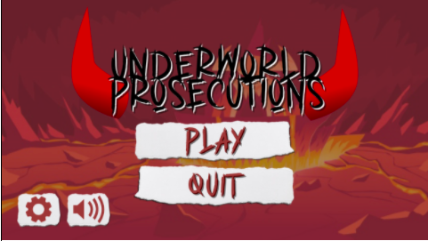

THE PROTOTYPE
For the prototype, we’ve decided to separate them into two parts. Interfaces will be done on figma, while the prototype gameplay will be coded.
FIGMA:
HOMESCREEN - main
HOMESCREEN > USER CLICKS PLAY BUTTON
EXAMPLE OF INTERFACE ON DEVICES
INVENTORY
FLOOR MAPS
CHARACTER SCREEN
For the second part, due to most of the members having no time at the near end of the semester, one of our members decided to take the task of programming the main content of the game. This will be written from her perspective.
Prototype making (the main gameplay: ZW’s perspective)
Going from where I left off, I decided to take out the pixel sprites and replace it with simple stick figures. This is to easily test the other functions of pygames. The functions in the goal list that is available initially were movement. In the newer one, I’ve added player animation (idle and run), jump, menu toggle, camera movement, and dialogue pop up. The process of understanding all these functions will be described further. The plan was to have at least some of the main functions of the gameplay to be present, mainly presenting and handling of the part where players would confront the enemy. I think it is important to mention that most of the code used to create this prototype references DaFluffyPotato’s beginner pygame tutorials on YouTube, thus, similarities are bound to happen. Credits goes to him.